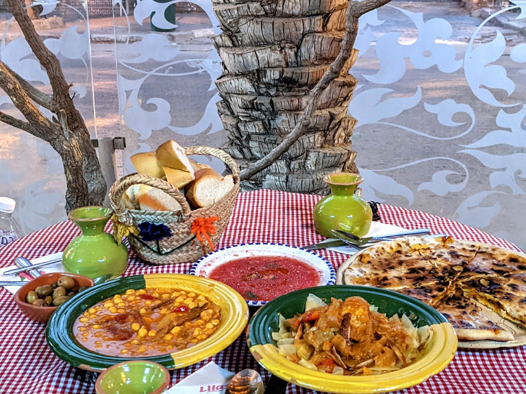
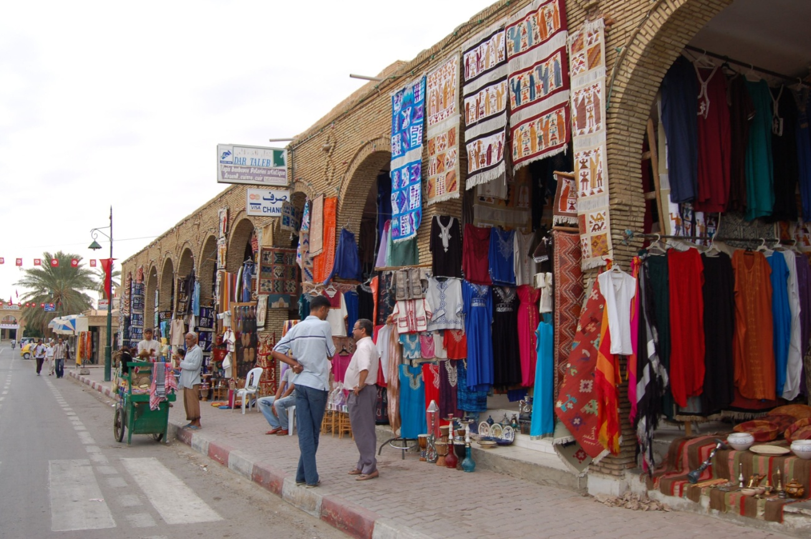

🍲 Les spécialités culinaires de Tozeur

🧥 Les habits traditionnels

Tozeur est une ville riche en traditions et en culture. Les habitants conservent depuis des générations des coutumes uniques liées à la musique, aux vêtements traditionnels, à l’artisanat et aux fêtes populaires. Ces traditions reflètent l’histoire de la région et montrent l’attachement des habitants à leur patrimoine culturel et à leur identité tunisienne.

